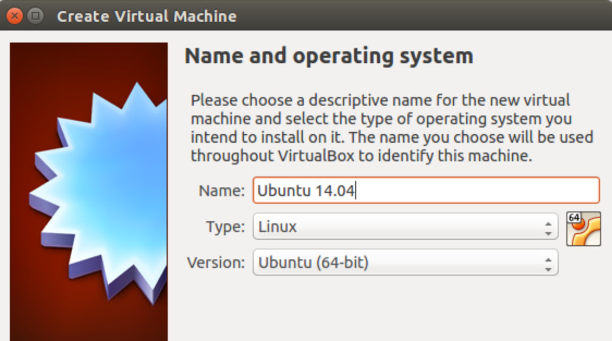
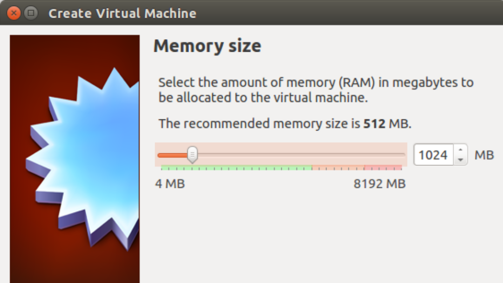
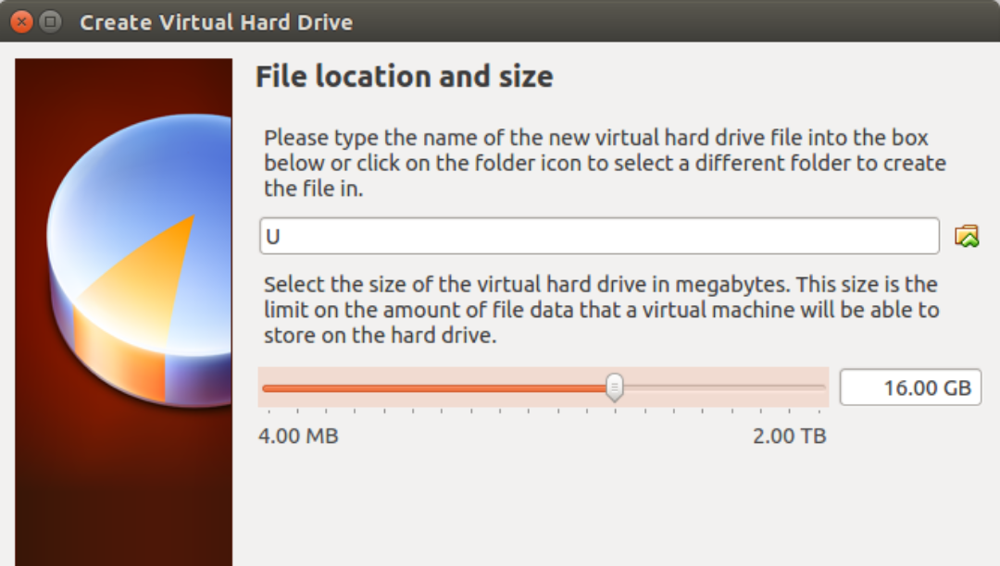
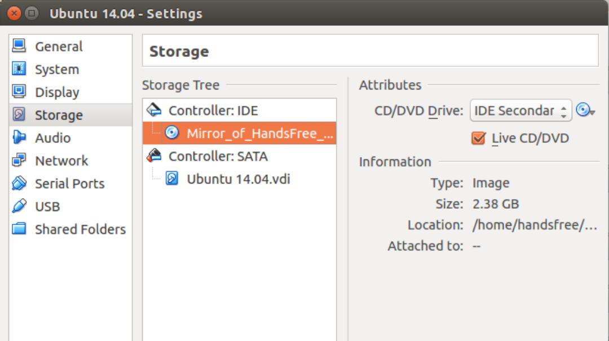
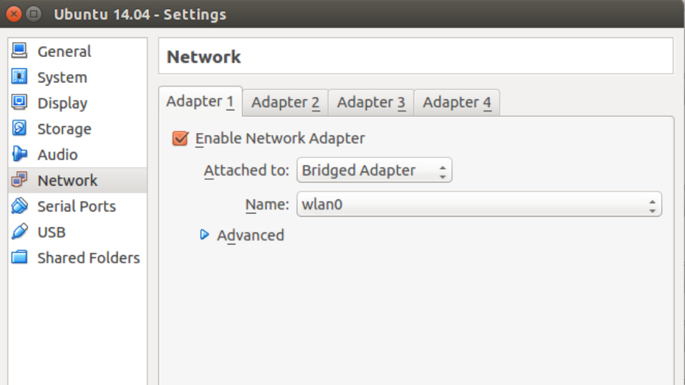
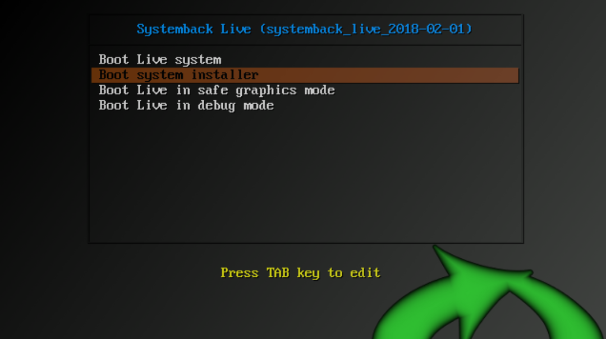
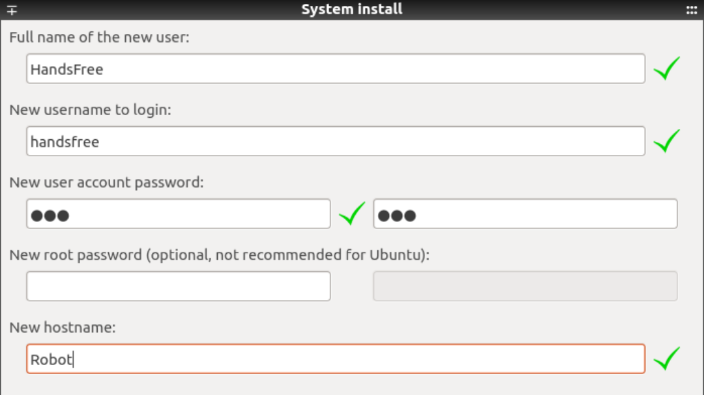
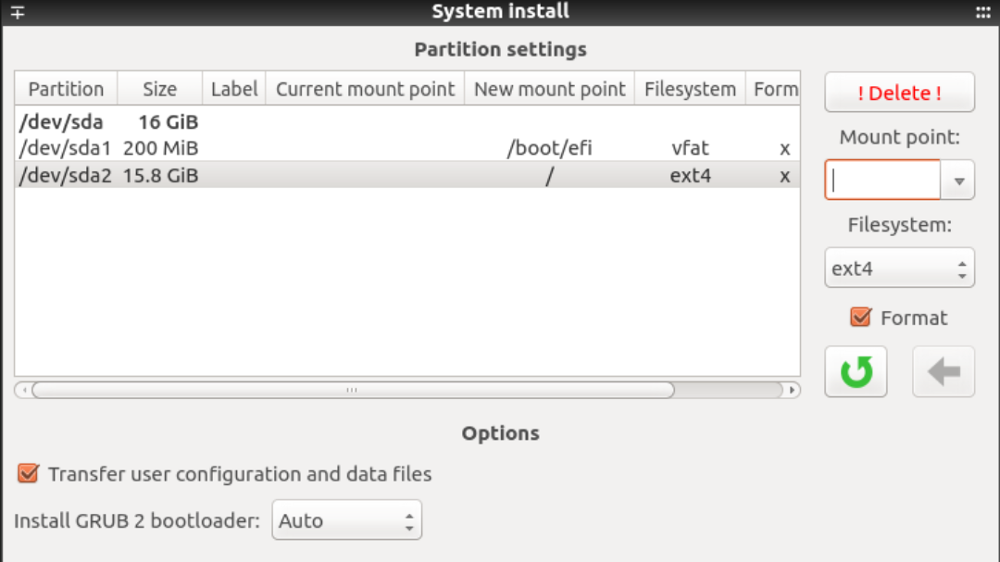
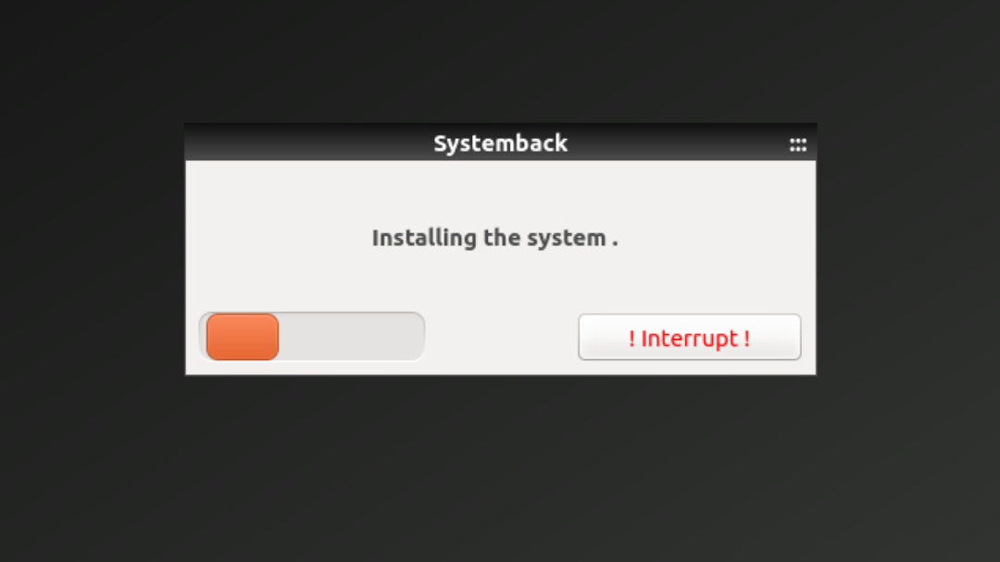

HandsFree系统镜像
HandsFree系统镜像包含了Ubuntu 14.04下的一些常用软件，ROS的indigo版本，和HandsFree机器人所需的环境配置。如果机器人端工控机系统被损坏，可以尝试使用此镜像还原系统。
HandsFree系统镜像下载链接
远程计算机如果不是Ubuntu 14.04系统，可以将此镜像安装在虚拟机，将网络连接方式设置为桥接即可。
下面将以在虚拟机中如何安装此镜像为例说明镜像的使用方法，在机器人端工控机还原系统时，可以直接参照开始安装。
创建虚拟机
安装虚拟机之后，点击新建虚拟机

设置内存容量

然后一路默认，到设置硬盘容量大小，建议16G

创建结束后设置网络和启动镜像，选择下载好的HandsFree的镜像。
等镜像安装结束，在CD/DVD Drive那部分选择Remove disk from virtual drive，将镜像移除，这样虚拟机就会从硬盘启动。

然后设置网络连接为桥接模式，这样虚拟机就可以和机器人端的工控机在同一局域网下

开始安装
开机进行会进入boot界面，选择Boot system installer

然后设置用户名和电脑名称，注意，如果是机器人端的工控机，用户名请设置为HandsFree，电脑名称设置为Robot

设置硬盘分区，建议自行设置一个约200M的/boot/efi的分区，其他分区自行设置。然后勾选上Transfer user configuration and data files

最后安装重启就可以了。
